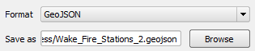

In the Save as vector layer as dialog, do:
-
Select GeoJSON as the Format.
-
Type directly on the Save as field or use the Browse button to select the destination and filename of the file to create. Set the filename as
Wake_Fire_Stations_2.geojson.

-
Enable the Add saved file to map option.
-
Click OK to create the new layer.
The new layer will load in the map canvas.
This concludes the lesson. Once you are done, click Finish to end the lesson.